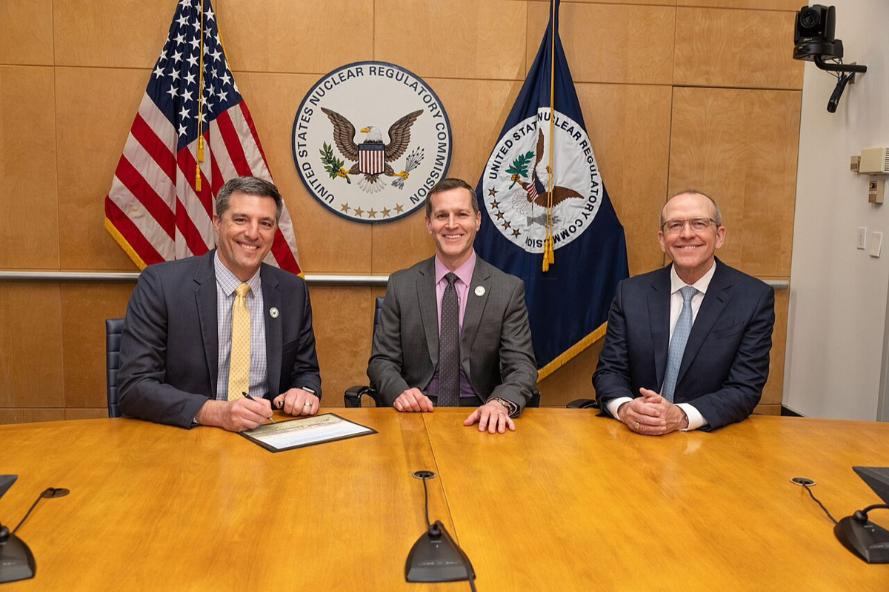

収益前の企業の値段は、成功時の価値に成功確率を掛けた期待値として説明されることが多い。この説明が意味を持つには、成功時の価値と成功確率のいずれもが外部から検算できなければならない。上場鉱山会社であれば、JORC 準拠あるいは NI 43-101 準拠の技術報告書に資源量と回収率と設備投資が載るため、第三者が正味現在価値を組み直せる。組み直した値と株価がずれていれば、そのずれ自体が投資判断の材料になる。
第三は財務投資家である。Helion Energy の2021年11月の Series E は実行額が5億ドルで、そのうち Sam Altman が個人として3億7,500万ドル以上を拠出した 出典出典。この資金はファンド経由ではなく個人資産であり、ファンドの満期という停止条件を持たない。半面、個人の事情に依存する。Altman は Helion の約3分の1を保有し、この持分が2026年5月の裁判で争点になった。Altman は2026年3月に Helion の取締役を退任している。OpenAI と Helion が電力の長期供給について交渉に入ったためである 出典。財務投資家の資金は、金額が大きくても利害相反や訴訟で継続性が揺れる。
発表額をそのまま資金の残存期間に換算してはいけない事例が Helion にある。同社の一次発表では Series E の実行額は5億ドルであり、主要業績マイルストーン達成に連動する追加調達の機会として17億ドルが付く 出典。報道では両者を合算して総額22億ドルと伝える例がある 出典。一次資料の語はコミットメントではなく opportunity（機会）である。この17億ドルが払い込まれたことを示す一次資料は2026年8月時点で確認できない。追加調達の機会は、達成しなければ入らない。つまり機会の存在は、現金が尽きる時期を後ろにずらす根拠にならない。
2013年撮影の、メリーランド州ロックビルにある米国原子力規制委員会（NRC）本庁のThree White Flintである。TerraPowerのNatrium実証炉は、この機関が建設許可の受理・安全評価・発給を行った。規制許可の時計が建設着手と次ラウンドの前進材料を縛る経路の、審査側の拠点である。写真：Nuclear Regulatory Commission／Public domain／Wikimedia Commons

NRC本庁での調印式で示された、TerraPowerのKemmerer Power Station Unit 1向け建設許可である。Commonsの説明は「Signed construction permit for TerraPower’s Kemmerer Power Station Unit 1」と記す。建設許可の発給が建設着手の前提であり、許可後に資金繰り上の前進材料が変わる、という節の仕組みそのものを写している。写真：NRCgov／Public domain／Wikimedia Commons
ここで誤読しやすいのが2点ある。1点目は、建設許可は運転許可ではないことである。TerraPower は2031年2月の建設完了後に Class 103 運転認可を申請する想定で、この審査期間が運転開始時期を左右する 出典。規制上の関門はまだ1つ残っている。2点目は、遅延の主因が規制ではなかったことである。運転開始目標が2020年の採択時の2028年から2030年へ後ろ倒しになった際の理由は、濃縮度20%未満の高濃縮低濃縮ウランの商用製造能力不足であり、ロシアからの供給が使えなくなったことが引き金である 出典。現在の運転開始目標は2030年から2031年である。規制のスケジュールを心配していると、燃料調達という別の律速を見落とす。
主張：YC標準Dealはマイルストーン非連動で受入時点に現金が立ち、バッチ内の停止条件は均一である。この均一性のもとでは、同一バッチ内の出口金額の分散はDealの停止条件の差では説明できない。反証条件：同一Dealの成熟バッチについて、出口金額（または評価額）の全社分布が公開され、四分位範囲が中央値の50%未満だと示す。またはYCがバッチ内で出口連動の追加条件を標準化した一次発表が出る。判定：判定不能（停止条件の均一性はYC The Deal一次で確認できる。出口分散の全社分布は非開示で、Loopt／Redditの2例だけでは母集団の分散を検証できない。分布表が取れれば判定できる）。
YC の公開ディレクトリは2026年時点で5,000社超を掲載し、投資条件は1社あたり50万ドル（うち12万5,000ドルで株式7%、残り37万5,000ドルはキャップなし MFN SAFE）である 出典出典。標語「Make something people want」と Do things that don't scale の叙述は 出典 にある。投資条件の設計そのものは、長期資本の特集で扱う。
Helion Raises $500 Million, Targets 2024 for Demonstrating Net Electricity from Fusion — https://www.helionenergy.com/articles/helion-raises-500m/
Helion secures $2.2B to commercialize fusion energy, TechCrunch — https://techcrunch.com/2021/11/05/helion-series-e/
Helion announces world's first fusion PPA with Microsoft — https://www.helionenergy.com/newsroom/helion-announces-worlds-first-fusion-ppa-with-microsoft
Helion to supply Microsoft with fusion power by 2028, or pay penalties, New Atlas — https://newatlas.com/energy/helion-microsoft-fusion-2028/
Nucor and Helion to Develop Historic 500 MW Fusion Power Plant, PR Newswire — https://www.prnewswire.com/news-releases/nucor-and-helion-to-develop-historic-500-mw-fusion-power-plant-301940341.html
Helion secures new licenses from Washington, ANS Nuclear Newswire — https://www.ans.org/news/2026-06-23/article-8140/helion-secures-new-licenses-from-washington/
Sam Altman's Personal Investments Are Under Investigation, Forbes — https://www.forbes.com/sites/alisondurkee/2026/05/12/sam-altmans-personal-investments-are-under-investigation-hell-testify-today-at-openai-trial/
Sam Altman-backed fusion startup Helion in talks to sell power to OpenAI, TechCrunch — https://techcrunch.com/2026/03/23/sam-altman-openai-fusion-energy-board-helion/
NRC Approves the Natrium Reactor Construction Permit, TerraPower — https://www.terrapower.com/NRC-Approves-Natrium-Reactor-Construction-Permit
TerraPower Commences Construction on America's First Utility-Scale Advanced Nuclear Power Plant, TerraPower — https://www.terrapower.com/TerraPower-Commences-Construction-on-Americas-First-Utility-Scale-Advanced-Nuclear-Power-Plant
NRC approves TerraPower construction permit, ANS Nuclear Newswire — https://www.ans.org/news/article-7818/nrc-approves-terrapower-construction-permit/
Governor Shapiro Secures 450 Million Dollar Investment from TerraPower Isotopes, Commonwealth of Pennsylvania — https://www.pa.gov/governor/newsroom/2026-press-releases/governor-shapiro-secures--450-million-investment-from-terrapower
Oklo Inc. 株価概要, Stock Analysis — https://stockanalysis.com/stocks/oklo/
X-Energy raises 1.02 billion dollars in record nuclear IPO, The Next Web — https://thenextweb.com/news/x-energy-ipo-billion-nuclear-ai-data-centres
KoBold's $2.3 Billion AI Copper Bet Hits Rock In Zambia, Forbes — https://www.forbes.com/sites/daraabasiita/2026/05/05/kobolds-23-billion-ai-copper-bet-hits-rock-in-zambia/
KoBold sets early-2030s first copper production at Mingomba project, African Mining Market — https://africanminingmarket.com/kobold-sets-early-2030s-first-copper-production-at-mingomba-project/25142/
Early copper production at $2.2 billion Mingomba projected to commence by 2031, Zambian Business Times — https://zambianbusinesstimes.com/early-copper-production-at-2-2-billion-mingomba-projected-to-commence-by-2031/
KoBold Metals Raises $537 Million At $2.96 Billion Valuation, Pulse 2.0 — https://pulse2.com/kobold-metals-ai-based-mining-company-raises-537-million-series-c-at-2-96-billion-valuation/
How Much Did KoBold Metals Raise? Funding & Key Investors, Clay — https://www.clay.com/dossier/kobold-metals-funding
Breaking Ground at Mingomba: A New Chapter for the Copperbelt, KoBold Metals — https://koboldmetals.com/2026/05/21/breaking-ground-at-mingomba-a-new-chapter-for-the-copperbelt/
NASA Office of Technology, Policy, and Strategy, Space-Based Solar Power, 2024年1月 — https://www.nasa.gov/wp-content/uploads/2024/01/otps-sbsp-report-final-tagged-approved-1-8-24-tagged-v2.pdf
Solar power from space? Actually, it might happen in a couple of years, Ars Technica — https://arstechnica.com/space/2024/10/solar-power-from-space-actually-it-might-happen-in-a-couple-of-years/
Aetherflux Raises $50M Series A Round to Build Space Solar Power, Via Satellite — https://www.satellitetoday.com/finance/2025/04/02/aetherflux-raises-50m-series-a-round-to-build-space-solar-power/
Cowboy raises $275 million to build rockets with orbital data center upper stages, SpaceNews — https://spacenews.com/cowboy-raises-275-million-to-build-rockets-with-orbital-data-center-upper-stages/
Startup takes new approach to space-based solar power, SpaceNews — https://spacenews.com/startup-takes-new-approach-to-space-based-solar-power/
DARPA Triples Wireless Power Beaming to 800 Watts for 5 Miles, NextBigFuture — https://www.nextbigfuture.com/2025/08/darpa-triples-wireless-power-beaming-to-800-watts-for-5-miles-but-2028-goals-are-5000-watts-for-120-miles.html
Paul Graham, Do Things that Don't Scale, 2013年7月 — https://paulgraham.com/ds.html
Y Combinator Startup Directory（AI 業種ページ、5,000 社超の記載）, 2026年9月 — https://www.ycombinator.com/companies/industry/ai
Y Combinator, The Deal — https://www.ycombinator.com/deal
Palle Broe, Pulling back the curtain on the magic of Y Combinator, 2025年2月11日（データ as of 2024年12月10日） — https://palle.substack.com/p/pulling-back-the-curtain-on-the-magic
Jared Heyman / Rebel Fund, On the power law of Y Combinator startups, 2024年4月30日 — https://jaredheyman.medium.com/on-the-power-law-of-y-combinator-startups-19cfb39863d6
Paul Graham, Founder Mode, 2024年9月 — https://paulgraham.com/foundermode.html
Steven Levy, Want to Get Into Founder Mode? You Should Be So Lucky, WIRED, 2024年9月 — https://www.wired.com/story/plaintext-want-to-get-into-founder-mode-you-should-be-so-lucky/
Ed Batista, The Antidote to "Manager Mode" is Actual Management, 2024年9月2日 — https://edbatista.com/2024/09/the-antidote-to-manager-mode-is-actual-management.html
Sam Gerstenzang, "Founder Mode" in context, 2024年 — https://samgerstenzang.substack.com/p/founder-mode-in-context
Blake Masters, Peter Thiel's CS183 Startup Class 4 Notes Essay — https://blakemasters.tumblr.com/post/21169325300/peter-thiels-cs183-startup-class-4-notes-essay
bnjs, CS183B Lecture 5: Peter Thiel Business Strategy and Monopoly Theory Notes — https://www.bnjs.co/notes/cs183b-lecture-5-peter-thiel-business-strategy-and-monopoly-theory/
Paul Graham, Maker's Schedule, Manager's Schedule, 2009年7月 — https://paulgraham.com/makerschedule.html
Freakonomics, Read This If You Hate Meetings（Graham エッセイの引用転載）, 2009年7月 — https://freakonomics.com/2009/07/read-this-if-you-hate-meetings/
Noy and Zhang, Experimental evidence on the productivity effects of generative artificial intelligence, Science, 2023年 — https://www.science.org/doi/10.1126/science.adh2586
Dell'Acqua et al., Navigating the Jagged Technological Frontier, MIT Sloan / SSRN working paper — https://mitsloan.mit.edu/sites/default/files/2023-10/SSRN-id4573321.pdf
Helion Announces $425M Series F, Helion Energy — https://www.helionenergy.com/newsroom/helion-announces-425m-series-f-investment-to-scale-commercialized-fusion-power
Lenny's Newsletter / Palle Broe, Pulling back the curtain on the magic of Y Combinator（上位4社＝Airbnb・DoorDash・Coinbase・Instacart、創出時価84%超）, 2025年2月11日 — https://www.lennysnewsletter.com/p/pulling-back-the-curtain-on-the-magic
Jared Heyman / Rebel Fund, On Y Combinator batch quality at scale（成熟期ユニコーン率約4%〜5%）, 2024年 — https://jaredheyman.medium.com/on-y-combinator-batch-quality-at-scale-866072b242b5


.jpg){kind=link}
.jpg){kind=link}


.jpg){kind=link}